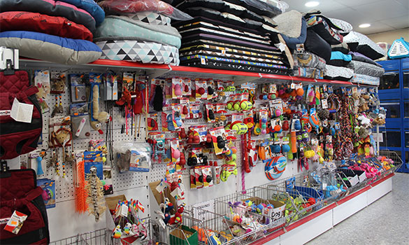

VETCLINIC SPA

El cuidado que se merecen nuestros amigos. Un spa de mascotas cuenta con bañeras de hidromasaje especiales para los animales y otras instalaciones adaptadas y productos adecuados para cada tipo de piel. Nuestro objetivo es ofrecer los mejores servicios y la calidad que nuestros mejores amigos se merecen. Veamos cuáles son algunos de los tratamientos que se pueden ofrecer en un spa de este tipo.
VETCLINIC SHOP
Somos la mejor opción en el Valle de los Chillos en ofrecer los mejores productos para nuestros amigos. En nuestra tienda de mascotas, física disponemos de una amplia selección de accesorios y juguetes. Conoce entre nuestra amplia gama de productos cuál es el mejor para tu mascota.
VETCLINIC FOOD

Está sección, fue diseñada específicamente para las exigentes necesidades nutricionales de nuestras mascotas en cada etapa de su vida, la extensa línea de alimentos que presentamos, tienen nutrientes que han demostrado ayudar a complementar y apoyar el desarrollo de cuerpos y sistemas inmunológicos de nuestros mejores amigos.